Fönster
Svensktillverkade, underhållsfria och energibesparande PVC-fönster – i Göteborg och hela Västsverige.

Fönstren tillverkas av tyskt, miljövänligt material utan bly. Profilerna är väderbeständiga och underhållsfria – man behöver aldrig måla fönstren, men kan polera dem för att bevara glansen.
Profilerna består av fem kammare för bättre isolering och är förstärkta med metall.
Vi erbjuder ett stort urval av glas, både för privatpersoner och företag. Olika design för badrumsglas, härdat och laminerat glas finns som tillval.
Beslagen är av tyskt ursprung och har olika lösningar. Standardfönster öppnas inåt och är ställbara i vädringsläge, så kallat dreh-kipp. Men det finns fler möjligheter: utåtgående funktion används på balkongdörrar och pardörrar, och skjutdörrar – med sin unika funktion – blev storsäljare på bara några månader.
Ritningar och funktioner
Alla fönster tillverkas efter mått. Kombinera fasta och öppningsbara lufter fritt.
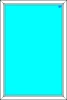
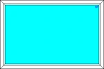
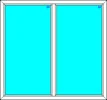
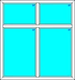
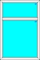
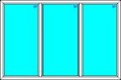
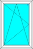
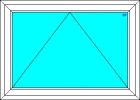
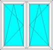
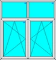
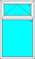
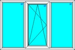
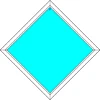
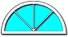
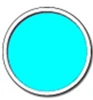
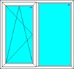
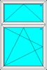
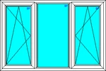


Berätta vad du planerar – vi tar fram en offert.
Allt tillverkas på beställning i vår fabrik i Lödöse. Välkommen att besöka utställningen i Lilla Edet, eller skicka en förfrågan direkt.
- 0707-14 40 01
- info@fvab.se
- Göteborgsvägen 90, Lilla Edet